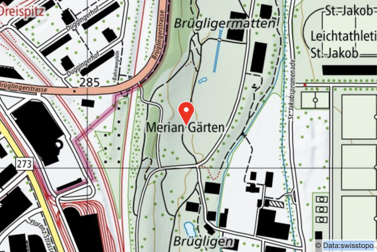
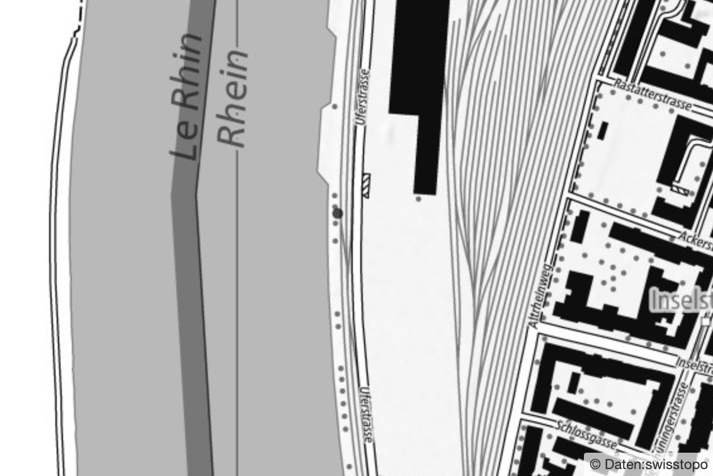
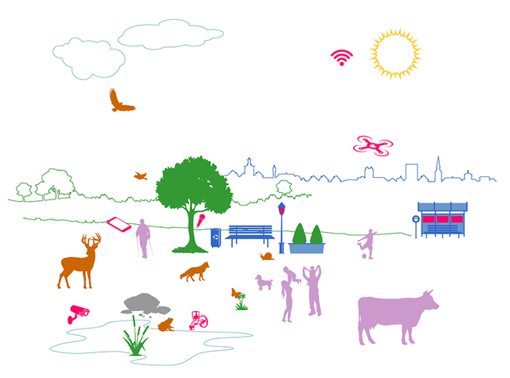
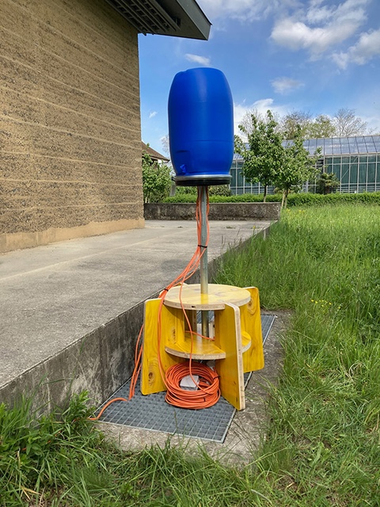
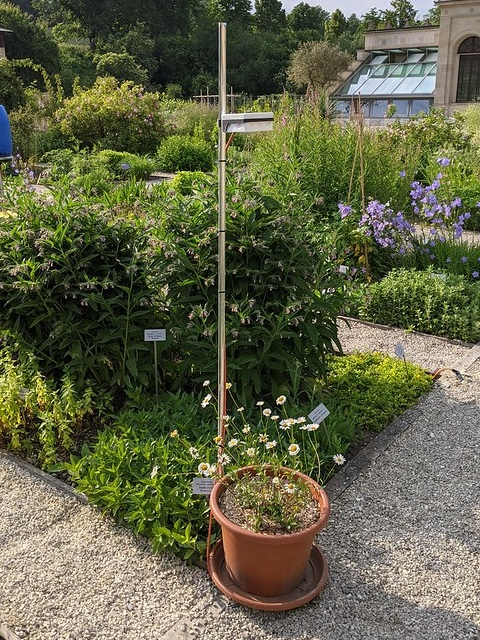
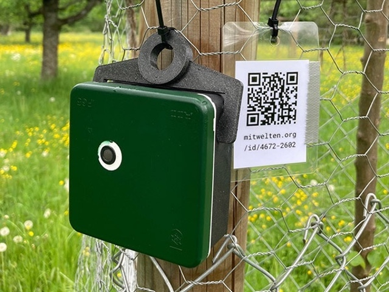
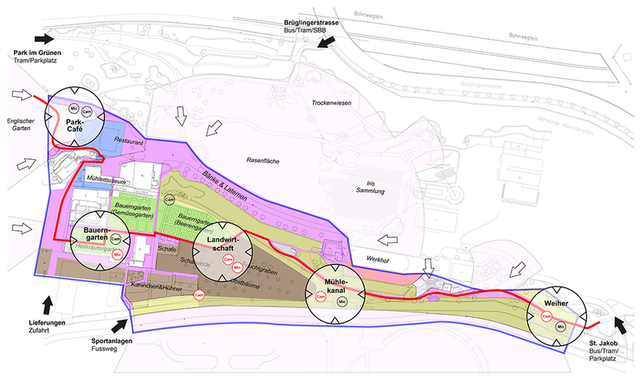

Mitwelten — Medienökologische Infrastrukturen für Biodiversität
Interdisziplinäres Designforschungsprojekt (SNF, 2020-2024)
Wie können mediale Designinterventionen auf Grundlage des Internets der Dinge ökologisch und kulturell zur Förderung von Biodiversität in lokalen Ökosystemen beitragen?
Zur Beantwortung dieser Leitfrage werden in drei Fallstudien in Mensch-Umwelt-Aushandlungsprozessen medientechnologische Infrastrukturen gestaltet und installiert: in der Kulturlandschaft der Merian Gärten bei Basel, in einem ehemaligen Hafengebiet der Stadt Basel und in einem Naturschutzgebiet in der Agglomeration Basels.

FS1: Merian Gärten, Basel (2021)

FS2: Hafenstadt, Basel (2022)

FS3: Natur- und Erlebnisweiher, Reinach BL (2023)
Die Designinterventionen haben zum Ziel, Pflanzen und Tieren eine Stimme zu geben, ökologische Wissensbestände und Erfahrungen zu erweitern, neue Formen Spezies übergreifenden Zusammenlebens zu gestalten und dadurch ökologische Werte und Verhaltensweisen zu kultivieren. Dazu wird ein Internet of Things Toolkit entwickelt, das im Rahmen der gestalterischen Interventionen als medientechnologische Infrastruktur dient.
Interdisziplinäres Designforschungsprojekt
- Projektdauer: 2020-2024
- Förderstelle: Schweizerischer Nationalfonds (SNF)
- Forschungseinrichtungen: Fachhochschule Nordwestschweiz – Hochschule für Gestaltung und Kunst und Technische Hochschule, mit SWILD – Stadtökologie Wildtierforschung Kommunikation (non-profit Forschungs- und Beratungsgemeinschaft)
- Disziplinen: Designforschung, Kultur- und Medienwissenschaft, Ökologie, Biologie, Informatik, Siedlungsökologie und Environmental Humanities, Geografie, Geo-Visualisierung
- Kooperationspartner Fallstudien: Merian Gärten der Christoph Merian Stiftung; Bau- und Verkehrsdepartement Basel-Stadt, Städtebau & Architektur, Gesamtentwicklung Basel Nord und Stadtgärtnerei Basel; Technische Verwaltung Reinach Umwelt + Energie und Aufsichtskommission der Reinacherheide
Ziel des Forschungsprojekts
Das Ziel des Forschungsprojekts ist es, durch kultur- und medienwissenschaftlich erweiterte, interdisziplinäre Designforschung und Technologie-Entwicklung Verfahren und Mittel zur Bewahrung der Artenvielfalt in Siedlungs- und Naherholungsgebieten zu entwickeln und öffentlich bereitzustellen.

Die Verhaltensweisen, Anforderungen und ökologischen Leistungen der verschiedenen lokalen Akteure – Menschen, Tiere, Pflanzen, Dinge und Technologien sowie Landschaftselemente und Infrastrukturen – werden untersucht, Zusammenhänge analysiert und bedarfsgerechte Gestaltungsentwürfe für geteilte Lebensräume entwickelt.
Mit sensorbasierten Installationen wird direkt im Feld erprobt, wie ökologische Wissensbestände und Erfahrungen erweitert werden können, um Pflanzen und Tieren im gesellschaftlichen Bewusstsein angemessen Gehör zu verschaffen. Anpassungsfähige, an Bedarf und Eigenheiten der örtlichen Flora und Fauna orientierte Infrastrukturen ersetzen auf Industrie, Auto und ausschiesslich auf den Menschen bezogene Bebauungsformen und fördern ökologische Werte und Verhaltensweisen. Dazu wird ein Internet of Things Toolkit entwickelt, das im Rahmen der gestalterischen Interventionen als medientechnologische Infrastruktur dient. Der Einsatz von Technologie erfolgt aber in kritischer Abgrenzung von kommerziellen und technophilen ‘smarten’ Produkten und Systemen – so zurückhaltend und transparent wie möglich, so durchdacht und konsequent wie nötig.

Access Point

Optischer Sensor

Audio Logger

Der Anstieg der Weltbevölkerung und globale Industrialisierungsprozesse führen zu Arten- und Lebensraumschwund (gemäss Forum Biodiversität Schweiz). Menschliche Siedlungsräume können Wildtieren mittlerweile attraktivere Lebensgrundlagen als die Agrarwüsten der industriellen Landwirtschaft bieten, wodurch es zu Konflikten kommt. Bisher werden Grünanlagen in der Siedlungsgestaltung auf den Menschen ausgerichtet, während der Mensch aus der Naturschutzbiologie ausgeschlossen wird. Der vermeintliche Widerspruch von Natur und Technologie muss in ein konstruktives Zusammenspiel transformiert werden, damit die Bewahrung der Artenvielfalt gelingen kann. Das diverse Forschungsgebiet der Medienökologie bietet einen theoretischen Rahmen, um dieses Spannungsfeld systematisch zu untersuchen und produktive Gestaltungsansätze zu entwickeln. Das Forschungsprojekt trägt auf diese Weise zur anwendungsorientierten und gesellschaftlich engagierten interdisziplinären Zusammenarbeit bei.
Ergebnisse und Vermittlung
Prototypen – Massnahmenpakete – Publikationsformate: Ein multimedialer Atlas der Biodiversität veranschaulicht jeweils im Kontext der Fallstudien interdisziplinär gewonnene Wissensbestände und lokale ökologische Zusammenhänge. Die Designinterventionen und technologischen Infrastrukturen werden mittels interdisziplinärer Verfahren evaluiert und für die unmittelbare gesellschaftliche Anwendung aufbereitet: Das Internet of Things Toolkit enthält beispielhafte Entwürfe zum Nachbau und Massnahmenpakete für die kommunale Freiraumgestaltung zur Bewahrung und Förderung der Biodiversität. Im Rahmen dieser Online-Präsenz werden nach und nach Datensätze, Visualisierungen und wissenschaftliche Beiträge veröffentlicht, die Ergebnisse der Feldstudien und abgeleitete Erkenntnisse wie Gestaltungsprinzipien oder theoretische Konzepte versammeln und zur Debatte stellen. Eine ergänzende Abschlusspublikation versammelt Forschungsergebnisse für das Fachpublikum.
Projektteam
Leiter Forschungsprojekt Mitwelten: Jan Torpus, FHNW
Forschung & Entwicklung: Thomas Amberg, Lisa Eggenschwiler, Andreas Erhardt, Felix Gerloff, Rebecca Geyer, Sandra Gloor, Christoph Küffer, Daniel Küry, Martin Lacayo, Jan Torpus, Janosch Montandon, Thomas Waltert, Timeo Wullschleger.
Wissenschaftlicher Beirat: Christiane Heibach, Claudia Mareis, Birgit Schneider, Eva Spehn, Evi Zemanek.